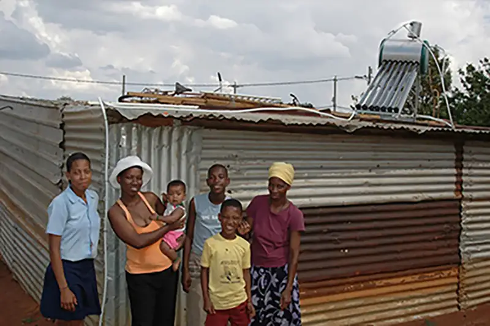
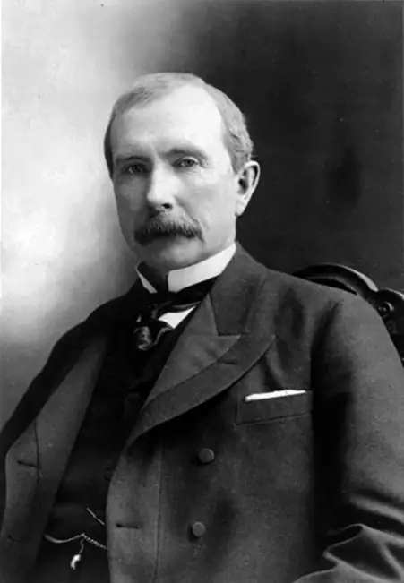
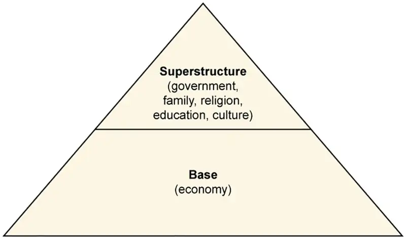
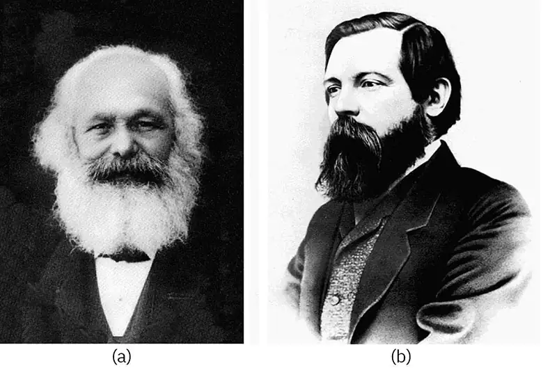
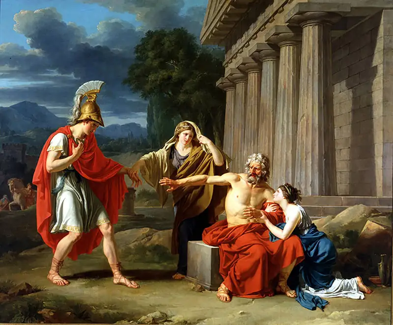

Chapter 4: Society and Social Interaction¶
Introduction¶
It was a school day, and Inayah woke up at 5:15 a.m, checked her phone, and began a few chores. Her aunt had gone to work, but had left a pile of vegetables to be cut for dinner. After taking care of that, Inayah gathered and organized the laundry, then woke up her younger cousin and sister. She led them in prayers, gave them breakfast, and dressed for school. Inayah was running late, so she didn’t have time to record a full video. Instead she took a few pictures and posted a good-morning clip, updated her status on another platform, and went to check on the younger girls.
Twenty minutes later, Inayah was fixing her sister’s uniform and calling to her cousin to hurry along. She loaded them up with their school bags and one sack of laundry each. The three girls walked the two kilometers to the bus station, dropping the laundry at the cleaner on the way. The ride to school took about thirty minutes.
Inayah had grown up about sixty kilometers away, where her parents still lived. She usually saw them on weekends. She had previously attended a boarding school, but those had become dangerous due to kidnappings or other trouble. Inayah’s new school was not quite as good as the old one, but she was still learning. She did particularly well in math and economics.
After school and the bus ride back, Inayah sent her sister and her cousin to the house while she stayed in town with some friends. The girls sat at the picnic tables near the basketball courts, where groups of other teenagers and some adults usually came to play. She didn’t talk to any of the boys there, but she had met several of them at her uncle’s store. The girls recorded a few videos together, started on their homework, and after about an hour, headed home to help with dinner.
How does Inayah’s day compare with yours? How does it compare to the days of teenagers you know? Inayah interacts with her family and friends based on individual relationships and personalities, but societal norms and acceptable behaviors shape those interactions. Someone from outside of her community might feel that her society’s expectations are too challenging, while others may feel they are too lenient. But Inayah may disagree with both perspectives. She might have taken those societal expectations as her own.
4.1 Types of Societies¶
Learning Objectives
By the end of this section, you should be able to:
- Describe the difference between preindustrial, industrial, and postindustrial societies
- Explain the role of environment on preindustrial societies
- Interpret the ways that technology impacts societal development
In sociological terms, society refers to a group of people who live in a definable community and share the same cultural components. On a broader scale, society consists of the people and institutions around us, our shared beliefs, and our cultural ideas. Typically, many societies also share a political authority.
Consider China and the United States. Both are technologically advanced, have dense networks of transportation and communications, rely on foreign trading partners for large portions of their economies, focus on education as a way to advance their citizens, and have large and expensive militaries. Both countries have citizens that may be largely satisfied with their governments and ways of life, while still holding some degree of distrust or discontent regarding their leaders. And both have a rural versus urban disparity that can cause tension and economic inequality among the population. An individual family or even a whole office full of people in one of the countries may look and act very similarly to families or offices in the other country.
But what is different? In China, a far greater percentage of people may be involved in manufacturing than America. Many of China’s cities didn’t evolve from ports, transit centers, or river confluences hundreds of years ago, but are newly created urban centers inhabited by recent transplants from other locations. While citizens in the U.S. can openly express their dissatisfaction with their government through social activism in person or, especially, online, Twitter, Facebook, and YouTube are banned in China, and the press is controlled by the government. Their appearance might be very similar, but the two countries are very different societies.
Sociologist Gerhard Lenski Jr. (1924–2015) defined societies in terms of their technological sophistication. As a society advances, so does its use of technology. Societies with rudimentary technology depend on the fluctuations of their environments, while industrialized societies have more control over the impact of their surroundings and thus develop different cultural features. This distinction is so important that sociologists generally classify societies along a spectrum of their level of industrialization—from preindustrial to industrial to postindustrial.
Preindustrial Societies¶
Before the Industrial Revolution and the widespread use of machines, societies were small, rural, and dependent largely on local resources. Economic production was limited to the amount of labor a human being could provide, and there were few specialized occupations. The very first occupation was that of hunter-gatherer.
Hunter-Gatherer¶
Hunter-gatherer societies demonstrate the strongest dependence on the environment of the various types of preindustrial societies. As the basic structure of human society until about 10,000–12,000 years ago, these groups were based around kinship or tribes. Hunter-gatherers relied on their surroundings for survival—they hunted wild animals and foraged for uncultivated plants for food. When resources became scarce, the group moved to a new area to find sustenance, meaning they were nomadic. These societies were common until several hundred years ago, but today only a few hundred remain in existence, such as indigenous Australian tribes sometimes referred to as “aborigines,” or the Bambuti, a group of pygmy hunter-gatherers residing in the Democratic Republic of Congo. Hunter-gatherer groups are quickly disappearing as the world’s population explodes.
Pastoral¶
Changing conditions and adaptations led some societies to rely on the domestication of animals where circumstances permitted. Roughly 7,500 years ago, human societies began to recognize their ability to tame and breed animals and to grow and cultivate their own plants. Pastoral societies, such as the Maasai villagers, rely on the domestication of animals as a resource for survival. Unlike earlier hunter-gatherers who depended entirely on existing resources to stay alive, pastoral groups were able to breed livestock for food, clothing, and transportation, and they created a surplus of goods. Herding, or pastoral, societies remained nomadic because they were forced to follow their animals to fresh feeding grounds. Around the time that pastoral societies emerged, specialized occupations began to develop, and societies commenced trading with local groups.
Sociology in the Real World: Where Societies Meet—The Worst and the Best
When cultures meet, technology can help, hinder, and even destroy. The Exxon Valdez oil spillage in Alaska nearly destroyed the local inhabitants' entire way of life. Oil spills in the Nigerian Delta have forced many of the Ogoni tribe from their land and forced removal has meant that over 100,000 Ogoni have sought refuge in the country of Benin (University of Michigan, n.d.). And the massive Deepwater Horizon oil spill of 2010 drew great attention as it occurred in the United States. Environmental disasters continue as Western technology and its need for energy expands into less developed (peripheral) regions of the globe.
Of course not all technology is bad. We take electric light for granted in the United States, Europe, and the rest of the developed world. Such light extends the day and allows us to work, read, and travel at night. It makes us safer and more productive. But regions in India, Africa, and elsewhere are not so fortunate. Meeting the challenge, one particular organization, Barefoot College, located in District Ajmer, Rajasthan, India, works with numerous less developed nations to bring solar electricity, water solutions, and education. The focus for the solar projects is the village elders. The elders agree to select two grandmothers to be trained as solar engineers and choose a village committee composed of men and women to help operate the solar program.
The program has brought light to over 450,000 people in 1,015 villages. The environmental rewards include a large reduction in the use of kerosene and in carbon dioxide emissions. The fact that the villagers are operating the projects themselves helps minimize their sense of dependence.

Horticultural¶
Around the same time that pastoral societies were on the rise, another type of society developed, based on the newly developed capacity for people to grow and cultivate plants. Previously, the depletion of a region’s crops or water supply forced pastoral societies to relocate in search of food sources for their livestock. Horticultural societies formed in areas where rainfall and other conditions allowed them to grow stable crops. They were similar to hunter-gatherers in that they largely depended on the environment for survival, but since they didn’t have to abandon their location to follow resources, they were able to start permanent settlements. This created more stability and more material goods and became the basis for the first revolution in human survival.
Agricultural¶
While pastoral and horticultural societies used small, temporary tools such as digging sticks or hoes, agricultural societies relied on permanent tools for survival. Around 10,000 B.C.E., an explosion of new technology known as the Agricultural Revolution made farming possible—and profitable. Farmers learned to rotate the types of crops grown on their fields and to reuse waste products such as manure as fertilizer, which led to better harvests and bigger surpluses of food. New tools for digging and harvesting were made of metal, and this made them more effective and longer lasting. Human settlements grew into towns and cities, and particularly bountiful regions became centers of trade and commerce.
This is also the age in which people had the time and comfort to engage in more contemplative and thoughtful activities, such as music, poetry, and philosophy. This period became referred to as the “dawn of civilization” by some because of the development of leisure and humanities. Craftspeople were able to support themselves through the production of creative, decorative, or thought-provoking aesthetic objects and writings.
As resources became more plentiful, social classes became more divisive. Those who had more resources could afford better living and developed into a class of nobility. Difference in social standing between men and women increased. As cities expanded, ownership and preservation of resources became a pressing concern.
Feudal¶
The ninth century gave rise to feudal societies. These societies contained a strict hierarchical system of power based around land ownership and protection. The nobility, known as lords, placed vassals in charge of pieces of land. In return for the resources that the land provided, vassals promised to fight for their lords.
These individual pieces of land, known as fiefdoms, were cultivated by the lower class. In return for maintaining the land, peasants were guaranteed a place to live and protection from outside enemies. Power was handed down through family lines, with peasant families serving lords for generations and generations. Ultimately, the social and economic system of feudalism failed and was replaced by capitalism and the technological advances of the industrial era.
Industrial Society¶
In the eighteenth century, Europe experienced a dramatic rise in technological invention, ushering in an era known as the Industrial Revolution. What made this period remarkable was the number of new inventions that influenced people’s daily lives. Within a generation, tasks that had until this point required months of labor became achievable in a matter of days. Before the Industrial Revolution, work was largely person- or animal-based, and relied on human workers or horses to power mills and drive pumps. In 1782, James Watt and Matthew Boulton created a steam engine that could do the work of twelve horses by itself.
Steam power began appearing everywhere. Instead of paying artisans to painstakingly spin wool and weave it into cloth, people turned to textile mills that produced fabric quickly at a better price and often with better quality. Rather than planting and harvesting fields by hand, farmers were able to purchase mechanical seeders and threshing machines that caused agricultural productivity to soar. Products such as paper and glass became available to the average person, and the quality and accessibility of education and health care soared. Gas lights allowed increased visibility in the dark, and towns and cities developed a nightlife.
One of the results of increased productivity and technology was the rise of urban centers. Workers flocked to factories for jobs, and the populations of cities became increasingly diverse. The new generation became less preoccupied with maintaining family land and traditions and more focused on acquiring wealth and achieving upward mobility for themselves and their families. People wanted their children and their children’s children to continue to rise to the top, and as capitalism increased, so did social mobility.
It was during the eighteenth and nineteenth centuries of the Industrial Revolution that sociology was born. Life was changing quickly and the long-established traditions of the agricultural eras did not apply to life in the larger cities. Masses of people were moving to new environments and often found themselves faced with horrendous conditions of filth, overcrowding, and poverty. Social scientists emerged to study the relationship between the individual members of society and society as a whole.
It was during this time that power moved from the hands of the aristocracy and “old money” to business-savvy newcomers who amassed fortunes in their lifetimes. Families such as the Rockefellers and the Vanderbilts became the new power players and used their influence in business to control aspects of government as well. Eventually, concerns over the exploitation of workers led to the formation of labor unions and laws that set mandatory conditions for employees. Although the introduction of new technology at the end of the nineteenth century ended the industrial age, much of our social structure and social ideas—like family, childhood, and time standardization—have a basis in industrial society.

Postindustrial Society¶
Information societies, sometimes known as postindustrial or digital societies, are a recent development. Unlike industrial societies that are rooted in the production of material goods, information societies are based on the production of information and services.
Digital technology is the steam engine of information societies, and computer moguls such as Steve Jobs and Bill Gates are its John D. Rockefellers and Cornelius Vanderbilts. Since the economy of information societies is driven by knowledge and not material goods, power lies with those in charge of storing and distributing information. Members of a postindustrial society are likely to be employed as sellers of services—software programmers or business consultants, for example—instead of producers of goods. Social classes are divided by access to education, since without technical skills, people in an information society lack the means for success.
4.2 Theoretical Perspectives on Society¶
Learning Objectives
By the end of this section, you should be able to:
- Describe Durkheim’s functionalist view of society
- Summarize the conflict theorist view of society
- Explain Marx’s concepts of class and alienation
- Identify how symbolic interactionists understand society
While many sociologists have contributed to research on society and social interaction, three thinkers form the base of modern-day perspectives. Émile Durkheim, Karl Marx, and Max Weber developed different theoretical approaches to help us understand the way societies function.
Émile Durkheim and Functionalism¶
As a functionalist, Émile Durkheim’s (1858–1917) perspective on society stressed the necessary interconnectivity of all of its elements. To Durkheim, society was greater than the sum of its parts. He asserted that individual behavior was not the same as collective behavior and that studying collective behavior was quite different from studying an individual’s actions. Durkheim called the communal beliefs, morals, and attitudes of a society the collective conscience. In his quest to understand what causes individuals to act in similar and predictable ways, he wrote, “If I do not submit to the conventions of society, if in my dress I do not conform to the customs observed in my country and in my class, the ridicule I provoke, the social isolation in which I am kept, produce, although in an attenuated form, the same effects as punishment” (Durkheim 1895). Durkheim also believed that social integration, or the strength of ties that people have to their social groups, was a key factor in social life.
Following the ideas of Comte and Spencer, Durkheim likened society to a living organism, in which each organ plays a necessary role in keeping the being alive. Even the socially deviant members of society are necessary, Durkheim argued, as punishments for deviance affirm established cultural values and norms. That is, punishment of a crime reaffirms our moral consciousness. “A crime is a crime because we condemn it,” Durkheim wrote in 1893. “An act offends the common consciousness not because it is criminal, but it is criminal because it offends that consciousness” (Durkheim 1893). Durkheim called these elements of society “social facts.” By this, he meant that social forces were to be considered real and existed outside the individual.
As an observer of his social world, Durkheim was not entirely satisfied with the direction of society in his day. His primary concern was that the cultural glue that held society together was failing, and people were becoming more divided. In his book The Division of Labor in Society (1893), Durkheim argued that as society grew more complex, social order made the transition from mechanical to organic.
Preindustrial societies, Durkheim explained, were held together by mechanical solidarity, a type of social order maintained by the collective conscience of a culture. Societies with mechanical solidarity act in a mechanical fashion; things are done mostly because they have always been done that way. This type of thinking was common in preindustrial societies where strong bonds of kinship and a low division of labor created shared morals and values among people, such as hunter-gatherer groups. When people tend to do the same type of work, Durkheim argued, they tend to think and act alike.
In industrial societies, mechanical solidarity is replaced with organic solidarity, which is social order based around an acceptance of economic and social differences. In capitalist societies, Durkheim wrote, division of labor becomes so specialized that everyone is doing different things. Instead of punishing members of a society for failure to assimilate to common values, organic solidarity allows people with differing values to coexist. Laws exist as formalized morals and are based on restitution rather than revenge.
While the transition from mechanical to organic solidarity is, in the long run, advantageous for a society, Durkheim noted that it can be a time of chaos and “normlessness.” One of the outcomes of the transition is something he called social anomie. Anomie—literally, “without law”—is a situation in which society no longer has the support of a firm collective consciousness. Collective norms are weakened. People, while more interdependent to accomplish complex tasks, are also alienated from each other. Anomie is experienced in times of social uncertainty, such as war or a great upturn or downturn in the economy. As societies reach an advanced stage of organic solidarity, they avoid anomie by redeveloping a set of shared norms. According to Durkheim, once a society achieves organic solidarity, it has finished its development.
Karl Marx and Conflict Theory¶
Karl Marx (1818–1883) is certainly among the most significant social thinkers in recent history. While there are many critics of his work, it is still widely respected and influential. For Marx, society’s constructions were predicated upon the idea of “base and superstructure.” This term refers to the idea that a society’s economic character forms its base, upon which rests the culture and social institutions, the superstructure. For Marx, it is the base (economy) that determines what a society will be like.

Additionally, Marx saw conflict in society as the primary means of change. Economically, he saw conflict existing between the owners of the means of production—the bourgeoisie—and the laborers, called the proletariat.
Marx maintained that these conflicts appeared consistently throughout history during times of social revolution. These revolutions or “class antagonisms” as he called them, were a result of one class dominating another. Most recently, with the end of feudalism, a new revolutionary class he called the bourgeoisie dominated the proletariat laborers. The bourgeoisie were revolutionary in the sense that they represented a radical change in the structure of society. In Marx’s words, “Society as a whole is more and more splitting up into two great hostile camps, into two great classes directly facing each other—Bourgeoisie and Proletariat” (Marx and Engels 1848).
In the mid-nineteenth century, as industrialization was booming, industrial employers, the "owners of the means of production" in Marx's terms, became more and more exploitative toward the working class. The large manufacturers of steel were particularly ruthless, and their facilities became popularly dubbed “satanic mills” based on a poem by William Blake. Marx’s colleague and friend, Frederick Engels, wrote The Condition of the Working-Class in England in 1844, which described in detail the horrid conditions.
Such is the Old Town of Manchester, and on re-reading my description, I am forced to admit that instead of being exaggerated, it is far from black enough to convey a true impression of the filth, ruin, and uninhabitableness, the defiance of all considerations of cleanliness, ventilation, and health which characterise the construction of this single district, containing at least twenty to thirty thousand inhabitants. And such a district exists in the heart of the second city of England, the first manufacturing city of the world.
Add to that the long hours, the use of child labor, and exposure to extreme conditions of heat, cold, and toxic chemicals, and it is no wonder that Marx and Engels referred to capitalism, which is a way of organizing an economy so that the things that are used to make and transport products (such as land, oil, factories, ships, etc.) are owned by individual people and companies rather than by the government, as the “dictatorship of the bourgeoisie.”

For Marx, what we do defines who we are. In historical terms, in spite of the persistent nature of one class dominating another, some element of humanity existed. There was at least some connection between the worker and the product, augmented by the natural conditions of seasons and the rise and fall of the sun, such as we see in an agricultural society. But with the bourgeoisie revolution and the rise of industry and capitalism, the worker now worked for wages alone. His relationship to his efforts was no longer of a human nature, but based on artificial conditions.
Marx described modern society in terms of alienation. Alienation refers to the condition in which the individual is isolated and divorced from his or her society, work, or the sense of self. Marx defined four specific types of alienation.
Alienation from the product of one’s labor. An industrial worker does not have the opportunity to relate to the product he labors on. Instead of training for years as a watchmaker, an unskilled worker can get a job at a watch factory pressing buttons to seal pieces together. The worker does not care if he is making watches or cars, simply that the job exists. In the same way, a worker may not even know or care what product to which he is contributing. A worker on a Ford assembly line may spend all day installing windows on car doors without ever seeing the rest of the car. A cannery worker can spend a lifetime cleaning fish without ever knowing what product they are used for.
Alienation from the process of one’s labor. A worker does not control the conditions of her job because she does not own the means of production. If a person is hired to work in a fast food restaurant, she is expected to make the food the way she is taught. All ingredients must be combined in a particular order and in a particular quantity; there is no room for creativity or change. An employee at Burger King cannot decide to change the spices used on the fries in the same way that an employee on a Ford assembly line cannot decide to place a car’s headlights in a different position. Everything is decided by the bourgeoisie who then dictate orders to the laborers.
Alienation from others. Workers compete, rather than cooperate. Employees vie for time slots, bonuses, and job security. Even when a worker clocks out at night and goes home, the competition does not end. As Marx commented in The Communist Manifesto (1848), “No sooner is the exploitation of the laborer by the manufacturer, so far at an end, that he receives his wages in cash, than he is set upon by the other portion of the bourgeoisie, the landlord, the shopkeeper, the pawnbroker.”
Alienation from one’s self. A final outcome of industrialization is a loss of connectivity between a worker and her occupation. Because there is nothing that ties a worker to her labor, there is no longer a sense of self. Instead of being able to take pride in an identity such as being a watchmaker, automobile builder, or chef, a person is simply a cog in the machine.
Taken as a whole, then, alienation in modern society means that an individual has no control over his life. Even in feudal societies, a person controlled the manner of his labor as to when and how it was carried out. But why, then, does the modern working class not rise up and rebel? (Indeed, Marx predicted that this would be the ultimate outcome and collapse of capitalism.)
Another idea that Marx developed is the concept of false consciousness. False consciousness is a condition in which the beliefs, ideals, or ideology of a person are not in the person’s own best interest. In fact, it is the ideology of the dominant class (here, the bourgeoisie capitalists) that is imposed upon the proletariat. Ideas such as the emphasis of competition over cooperation, or of hard work being its own reward, clearly benefit the owners of industry. Therefore, workers are less likely to question their place in society and assume individual responsibility for existing conditions.
In order for society to overcome false consciousness, Marx proposed that it be replaced with class consciousness, the awareness of one’s rank in society. Instead of existing as a “class in itself,” the proletariat must become a “class for itself” in order to produce social change (Marx and Engels 1848), meaning that instead of just being an inert strata of society, the class could become an advocate for social improvements. Only once society entered this state of political consciousness would it be ready for a social revolution.
Max Weber and Symbolic Interactionism¶
While Karl Marx may be one of the best-known thinkers of the nineteenth century, Max Weber is certainly one of the greatest influences in the field of sociology. Like the other social thinkers discussed here, he was concerned with the important changes taking place in Western society with the advent of industrialization. And, like Marx and Durkheim, he feared that industrialization would have negative effects on individuals.
Weber’s primary focus on the structure of society lay in the elements of class, status, and power. Similar to Marx, Weber saw class as economically determined. Society, he believed, was split between owners and laborers. Status, on the other hand, was based on noneconomic factors such as education, kinship, and religion. Both status and class determined an individual’s power, or influence over ideas. Unlike Marx, Weber believed that these ideas formed the base of society.
Weber’s analysis of modern society centered on the concept of rationalization. A rational society is one built around logic and efficiency rather than morality or tradition. To Weber, capitalism is entirely rational. Although this leads to efficiency and merit-based success, it can have negative effects when taken to the extreme. In some modern societies, this is seen when rigid routines and strict design lead to a mechanized work environment and a focus on producing identical products in every location.
Another example of the extreme conditions of rationality can be found in Charlie Chaplin’s classic film Modern Times (1936). Chaplin’s character performs a routine task to the point where he cannot stop his motions even while away from the job. Indeed, today we even have a recognized medical condition that results from such tasks, known as “repetitive stress syndrome.”
Weber was also unlike his predecessors in that he was more interested in how individuals experienced societal divisions than in the divisions themselves. The symbolic interactionism theory, the third of the three most recognized theories of sociology, is based on Weber’s early ideas that emphasize the viewpoint of the individual and how that individual relates to society. For Weber, the culmination of industrialization, rationalization, and the like results in what he referred to as the iron cage, in which the individual is trapped by institutions and bureaucracy. This leads to a sense of “disenchantment of the world,” a phrase Weber used to describe the final condition of humanity. Indeed a dark prediction, but one that has, at least to some degree, been borne out (Gerth and Mills 1918). In a rationalized, modern society, we have supermarkets instead of family-owned stores. We have chain restaurants instead of local eateries. Superstores that offer a multitude of merchandise have replaced independent businesses that focused on one product line, such as hardware, groceries, automotive repair, or clothing. Shopping malls offer retail stores, restaurants, fitness centers, even condominiums. This change may be rational, but is it universally desirable?
Big Picture: The Protestant Work Ethic
In a series of essays in 1904, Max Weber presented the idea of the Protestant work ethic, a new attitude toward work based on the Calvinist principle of predestination. In the sixteenth century, Europe was shaken by the Protestant Revolution. Religious leaders such as Martin Luther and John Calvin argued against the Catholic Church’s belief in salvation through obedience. While Catholic leaders emphasized the importance of religious dogma and performing good deeds as a gateway to Heaven, Protestants believed that inner grace, or faith in God, was enough to achieve salvation.
John Calvin in particular popularized the Christian concept of predestination, the idea that all events—including salvation—have already been decided by God. Because followers were never sure whether they had been chosen to enter Heaven or Hell, they looked for signs in their everyday lives. If a person was hard-working and successful, he was likely to be one of the chosen. If a person was lazy or simply indifferent, he was likely to be one of the damned.
Weber argued that this mentality encouraged people to work hard for personal gain; after all, why should one help the unfortunate if they were already damned? Over time, the Protestant work ethic spread and became the foundation for capitalism.
4.3 Social Constructions of Reality¶
Learning Objectives
By the end of this section, you should be able to:
- Interpret the sociological concept of reality as a social construct
- Define roles and describe their places in people’s daily interactions
- Explain how individuals present themselves and perceive themselves in a social context
Until now, we’ve primarily discussed the differences between societies. Rather than discuss their problems and configurations, we’ll now explore how society came to be and how sociologists view social interaction.
In 1966 sociologists Peter Berger and Thomas Luckmann wrote a book called The Social Construction of Reality. In it, they argued that society is created by humans and human interaction, which they call habitualization. Habitualization describes how “any action that is repeated frequently becomes cast into a pattern, which can then be … performed again in the future in the same manner and with the same economical effort” (Berger and Luckmann 1966). Not only do we construct our own society but we also accept it as it is because others have created it before us. Society is, in fact, “habit.”
For example, your school exists as a school and not just as a building because you and others agree that it is a school. If your school is older than you are, it was created by the agreement of others before you. In a sense, it exists by consensus, both prior and current. This is an example of the process of institutionalization, the act of implanting a convention or norm into society. Bear in mind that the institution, while socially constructed, is still quite real.
Another way of looking at this concept is through W.I. Thomas’s notable Thomas theorem which states, “If men define situations as real, they are real in their consequences” (Thomas and Thomas 1928). That is, people’s behavior can be determined by their subjective construction of reality rather than by objective reality. For example, a teenager who is repeatedly given a label—overachiever, player, bum—might live up to the term even though it initially wasn’t a part of his character.
Like Berger and Luckmann in their description of habitualization, Thomas states that our moral codes and social norms are created by “successive definitions of the situation.” This concept is defined by sociologist Robert K. Merton as a self-fulfilling prophecy. Merton explains that with a self-fulfilling prophecy, even a false idea can become true if it is acted upon. One example he gives is of a “bank run.” Say for some reason, a number of people falsely fear that their bank is soon to be bankrupt. Because of this false notion, people run to their bank and demand all of their cash at once. As banks rarely, if ever, have that much money on hand, the bank does indeed run out of money, fulfilling the customers’ prophecy. Here, reality is constructed by an idea.
Symbolic interactionists offer another lens through which to analyze the social construction of reality. With a theoretical perspective focused on the symbols (like language, gestures, and artifacts) that people use to interact, this approach is interested in how people interpret those symbols in daily interactions. Interactionists also recognize that language and body language reflect our values. One has only to learn a foreign tongue to know that not every English word can be easily translated into another language. The same is true for gestures. While Americans might recognize a “thumbs up” as meaning “great,” in Germany it would mean “one” and in Japan it would mean “five.” Thus, our construction of reality is influenced by our symbolic interactions.

Roles and Status¶
As you can imagine, people employ many types of behaviors in day-to-day life. Roles are patterns of behavior that we recognize in each other that are representative of a person’s social status. Currently, while reading this text, you are playing the role of a student. However, you also play other roles in your life, such as “daughter,” “neighbor,” or “employee.” These various roles are each associated with a different status.
Sociologists use the term status to describe the responsibilities and benefits that a person experiences according to their rank and role in society. Some statuses are ascribed—those you do not select, such as son, elderly person, or female. Others, called achieved statuses, are obtained by choice, such as a high school dropout, self-made millionaire, or nurse. As a daughter or son, you occupy a different status than as a neighbor or employee. One person can be associated with a multitude of roles and statuses. Even a single status such as “student” has a complex role-set, or array of roles, attached to it (Merton 1957). It is important to note that status refers to the rank in social hierarchy, while role is the behavior expected of a person holding a certain status.
If too much is required of a single role, individuals can experience role strain. Consider the duties of a parent: cooking, cleaning, driving, problem-solving, acting as a source of moral guidance—the list goes on. Similarly, a person can experience role conflict when one or more roles are contradictory. A parent who also has a full-time career can experience role conflict on a daily basis. When there is a deadline at the office but a sick child needs to be picked up from school, which comes first? When you are working toward a promotion but your children want you to come to their school play, which do you choose? Being a college student can conflict with being an employee, being an athlete, or even being a friend. Our roles in life have a great effect on our decisions and who we become.
Presentation of Self¶
Of course, it is impossible to look inside a person’s head and study what role they are playing. All we can observe is behavior, or role performance. Role performance is how a person expresses his or her role. Sociologist Erving Goffman presented the idea that a person is like an actor on a stage. Calling his theory dramaturgy, Goffman believed that we use “impression management” to present ourselves to others as we hope to be perceived. Each situation is a new scene, and individuals perform different roles depending on who is present (Goffman 1959). Think about the way you behave around your coworkers versus the way you behave around your grandparents versus the way you behave with a blind date. Even if you’re not consciously trying to alter your personality, your grandparents, coworkers, and date probably see different sides of you.
As in a play, the setting matters as well. If you have a group of friends over to your house for dinner, you are playing the role of a host. It is agreed upon that you will provide food and seating and probably be stuck with a lot of the cleanup at the end of the night. Similarly, your friends are playing the roles of guests, and they are expected to respect your property and any rules you may set forth (“Don’t leave the door open or the cat will get out.”). In any scene, there needs to be a shared reality between players. In this case, if you view yourself as a guest and others view you as a host, there are likely to be problems.
Impression management is a critical component of symbolic interactionism. For example, a judge in a courtroom has many “props” to create an impression of fairness, gravity, and control—like their robe and gavel. Those entering the courtroom are expected to adhere to the scene being set. Just imagine the “impression” that can be made by how a person dresses. This is the reason that attorneys frequently select the hairstyle and apparel for witnesses and defendants in courtroom proceedings.
Goffman’s dramaturgy ideas expand on the ideas of Charles Cooley and the looking-glass self. According to Cooley, we base our image on what we think other people see (Cooley 1902). We imagine how we must appear to others, then react to this speculation. We don certain clothes, prepare our hair in a particular manner, wear makeup, use cologne, and the like—all with the notion that our presentation of ourselves is going to affect how others perceive us. We expect a certain reaction, and, if lucky, we get the one we desire and feel good about it. But more than that, Cooley believed that our sense of self is based upon this idea: we imagine how we look to others, draw conclusions based upon their reactions to us, and then we develop our personal sense of self. In other words, people’s reactions to us are like a mirror in which we are reflected.
Chapter Review¶
Key Terms¶
- achieved status
- the status a person chooses, such as a level of education or income
- agricultural societies
- societies that rely on farming as a way of life
- alienation
- an individual’s isolation from his society, his work, and his sense of self
- anomie
- a situation in which society no longer has the support of a firm collective consciousness
- ascribed status
- the status outside of an individual’s control, such as sex or race
- bourgeoisie
- the owners of the means of production in a society
- capitalism
- a way of organizing an economy so that the things that are used to make and transport products (such as land, oil, factories, ships, etc.) are owned by individual people and companies rather than by the government
- class consciousness
- the awareness of one’s rank in society
- collective conscience
- the communal beliefs, morals, and attitudes of a society
- false consciousness
- a condition in which the beliefs, ideals, or ideology of a person are not in the person’s own best interest
- feudal societies
- societies that operate on a strict hierarchical system of power based around land ownership and protection
- habitualization
- the idea that society is constructed by us and those before us, and it is followed like a habit
- horticultural societies
- societies based around the cultivation of plants
- hunter-gatherer societies
- societies that depend on hunting wild animals and gathering uncultivated plants for survival
- industrial societies
- societies characterized by a reliance on mechanized labor to create material goods
- information societies
- societies based on the production of nonmaterial goods and services
- institutionalization
- the act of implanting a convention or norm into society
- iron cage
- a situation in which an individual is trapped by social institutions
- looking-glass self
- our reflection of how we think we appear to others
- mechanical solidarity
- a type of social order maintained by the collective consciousness of a culture
- organic solidarity
- a type of social order based around an acceptance of economic and social differences
- pastoral societies
- societies based around the domestication of animals
- proletariat
- the laborers in a society
- rationalization
- a belief that modern society should be built around logic and efficiency rather than morality or tradition
- role conflict
- a situation when one or more of an individual’s roles clash
- role performance
- the expression of a role
- role strain
- stress that occurs when too much is required of a single role
- role-set
- an array of roles attached to a particular status
- roles
- patterns of behavior that are representative of a person’s social status
- self-fulfilling prophecy
- an idea that becomes true when acted upon
- social integration
- how strongly a person is connected to his or her social group
- society
- a group of people who live in a definable community and share the same cultural components
- status
- the responsibilities and benefits that a person experiences according to his or her rank and role in society
- Thomas theorem
- how a subjective reality can drive events to develop in accordance with that reality, despite being originally unsupported by objective reality
Summary¶
4.1 Types of Societies¶
Societies are classified according to their development and use of technology. For most of human history, people lived in preindustrial societies characterized by limited technology and low production of goods. After the Industrial Revolution, many societies based their economies around mechanized labor, leading to greater profits and a trend toward greater social mobility. At the turn of the new millennium, a new type of society emerged. This postindustrial, or information, society is built on digital technology and nonmaterial goods.
4.2 Theoretical Perspectives on Society¶
Émile Durkheim believed that as societies advance, they make the transition from mechanical to organic solidarity. For Karl Marx, society exists in terms of class conflict. With the rise of capitalism, workers become alienated from themselves and others in society. Sociologist Max Weber noted that the rationalization of society can be taken to unhealthy extremes.
4.3 Social Constructions of Reality¶
Society is based on the social construction of reality. How we define society influences how society actually is. Likewise, how we see other people influences their actions as well as our actions toward them. We all take on various roles throughout our lives, and our social interactions depend on what types of roles we assume, who we assume them with, and the scene where interaction takes place.
References¶
References
Maasai Association. “Facing the Lion.” Retrieved January 4, 2012 (http://www.maasai-association.org/lion.html).
4.1 Types of Societies
Immigration and Refugee Board of Canada. 2005. “Israel: Treatment of Bedouin, Including Incidents of Harassment, Discrimination or Attacks; State Protection (January 2003–July 2005)”, Refworld, July 29. Retrieved February 10, 2012 (http://www.unhcr.org/refworld/docid/440ed71325.html).
Kjeilen, Tore. “Bedouin.” Looklex.com. Retrieved February 17, 2012 (http://looklex.com/index.htm).
University of Michigan. n.d. "The Curse of Oil in Ogoniland". Retrieved January 2, 2015 (http://www.umich.edu/~snre492/cases_03-04/Ogoni/Ogoni_case_study.htm).
4.2 Theoretical Perspectives on Society
Durkheim, Émile. 1960 [1893]. The Division of Labor in Society. Translated by George Simpson. New York: Free Press.
Durkheim, Émile. 1982 [1895]. The Rules of the Sociological Method. Translated by W. D. Halls. New York: Free Press.
Engels, Friedrich. 1892. The Condition of the Working-Class in England in 1844. London: Swan Sonnenschein & Co.
Geographia. 1998. “The Bedouin Way.” Geograpia.com. Retrieved January 4, 2012 (http://www.geographia.com/egypt/sinai/bedouin02.htm).
Gerth, H. H., and C. Wright Mills. 1946. From Max Weber: Essays in Sociology. New York: Oxford University Press.
Marx, Karl and Friedrich Engels. 1998 [1848]. The Communist Manifesto. New York: Penguin Group.
4.3 Social Constructions of Reality
Berger, P. L., and T. Luckmann. 1966. The Social Construction of Reality: A Treatise in the Sociology of Knowledge. Garden City, NY: Anchor Books.
Cooley, Charles H. 1902. Human Nature and the Social Order. New York: Scribner's.
Goffman, Erving. 1959. The Presentation of Self In Everyday Life. New York: Doubleday.
Merton, Robert K. 1957. “The Role-Set: Problems in Sociological Theory.” British Journal of Sociology 8(2):110–113.
Thomas, W.I., and D.S. Thomas. 1928. The Child in America: Behavior Problems and Programs. New York: Knopf.
Section Quiz¶
4.1 Types of Societies¶
1. Which of the following fictional societies is an example of a pastoral society?
- The Deswan people, who live in small tribes and base their economy on the production and trade of textiles
- The Rositian Clan, a small community of farmers who have lived on their family’s land for centuries
- The Hunti, a wandering group of nomads who specialize in breeding and training horses
- The Amaganda, an extended family of warriors who serve a single noble family
Answer
C
2. Which of the following occupations is a person of power most likely to have in an information society?
- Software engineer
- Coal miner
- Children’s book author
- Sharecropper
Answer
A
3. Which of the following societies were the first to have permanent residents?
- Industrial
- Hunter-gatherer
- Horticultural
- Feudal
Answer
C
4.2 Theoretical Perspectives on Society¶
4. Organic solidarity is most likely to exist in which of the following types of societies?
- Hunter-gatherer
- Industrial
- Agricultural
- Feudal
Answer
B
5. According to Marx, the _____ own the means of production in a society.
- proletariat
- vassals
- bourgeoisie
- anomie
Answer
C
6. Which of the following best depicts Marx’s concept of alienation from the process of one’s labor?
- A supermarket cashier always scans store coupons before company coupons because she was taught to do it that way.
- A businessman feels that he deserves a raise, but is nervous to ask his manager for one; instead, he comforts himself with the idea that hard work is its own reward.
- An associate professor is afraid that she won’t be given tenure and starts spreading rumors about one of her associates to make herself look better.
- A construction worker is laid off and takes a job at a fast food restaurant temporarily, although he has never had an interest in preparing food before.
Answer
A
7. The Protestant work ethic is based on the concept of predestination, which states that ________.
- performing good deeds in life is the only way to secure a spot in Heaven
- salvation is only achievable through obedience to God
- no person can be saved before he or she accepts Jesus Christ as his or her savior
- God has already chosen those who will be saved and those who will be damned
Answer
D
8. The concept of the iron cage was popularized by which of the following sociological thinkers?
- Max Weber
- Karl Marx
- Émile Durkheim
- Friedrich Engels
Answer
A
9. Émile Durkheim’s ideas about society can best be described as ________.
- functionalist
- conflict theorist
- symbolic interactionist
- rationalist
Answer
A
4.3 Social Constructions of Reality¶
10. Mary works full-time at an office downtown while her young children stay at a neighbor’s house. She’s just learned that the childcare provider is leaving the country. Mary has succumbed to pressure to volunteer at her church, plus her ailing mother-in-law will be moving in with her next month. Which of the following is likely to occur as Mary tries to balance her existing and new responsibilities?
- Role conflict
- Self-fulfilling prophecy
- Status conflict
- Status strain
Answer
A
11. According to Peter Berger and Thomas Luckmann, society is based on ________.
- habitual actions
- status
- institutionalization
- role performance
Answer
A
12. Paco knows that women find him attractive, and he’s never found it hard to get a date. But as he ages, he dyes his hair to hide the gray and wears clothes that camouflage the weight he has put on. Paco’s behavior can be best explained by the concept of ___________.
- role strain
- the looking-glass self
- role performance
- habitualization
Answer
B
Short Answer¶
4.1 Types of Societies¶
13. In which type or types of societies do the benefits seem to outweigh the costs? Explain your answer, and cite social and economic reasons.
14. Is Gerhard Lenski right in classifying societies based on technological advances? What other criteria might be appropriate, based on what you have read?
4.2 Theoretical Perspectives on Society¶
15. Choose two of the three sociologists discussed here (Durkheim, Marx, Weber), and use their arguments to explain a current social event such as the Occupy movement. Do their theories hold up under modern scrutiny?
16. Think of the ways workers are alienated from the product and process of their jobs. How can these concepts be applied to students and their educations?
4.3 Social Constructions of Reality¶
17. Draw a large circle, and then “slice” the circle into pieces like a pie, labeling each piece with a role or status that you occupy. Add as many statuses, ascribed and achieved, that you have. Don’t forget things like dog owner, gardener, traveler, student, runner, employee. How many statuses do you have? In which ones are there role conflicts?
18. Think of a self-fulfilling prophecy that you’ve experienced. Based on this experience, do you agree with the Thomas theorem? Use examples from current events to support your answer as well.
Further Research¶
4.1 Types of Societies¶
The Maasai are a modern pastoral society with an economy largely structured around herds of cattle. Read more about the Maasai people and see pictures of their daily lives here.
4.2 Theoretical Perspectives on Society¶
One of the most influential pieces of writing in modern history was Karl Marx and Friedrich Engels’ The Communist Manifesto. Visit this site to read the original document that spurred revolutions around the world.
4.3 Social Constructions of Reality¶
TV Tropes is a website where users identify concepts that are commonly used in literature, film, and other media. Although its tone is for the most part humorous, the site provides a good jumping-off point for research. Browse the list of examples under the entry of “self-fulfilling prophecy.” Pay careful attention to the real-life examples. Are there ones that surprised you or that you don’t agree with?
Adapted from Introduction to Sociology 3e by OpenStax, licensed under CC BY 4.0. Access the original for free at openstax.org. Changes: converted to the web reading format of The Open Book Project.